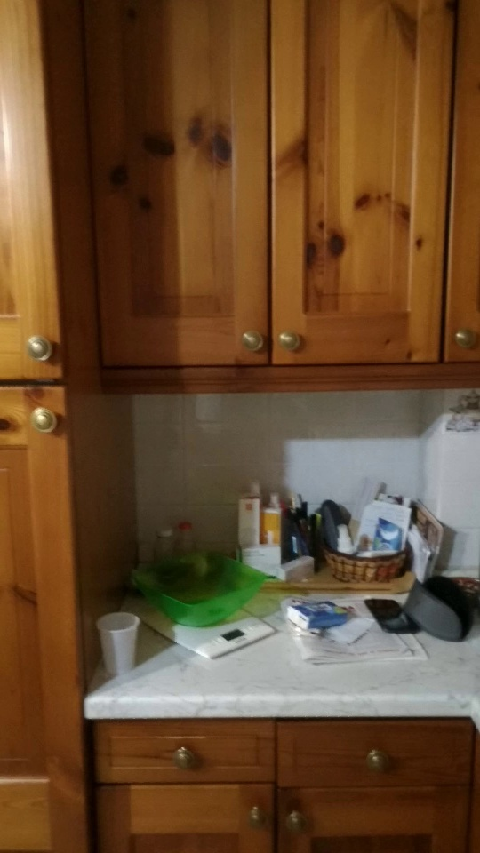
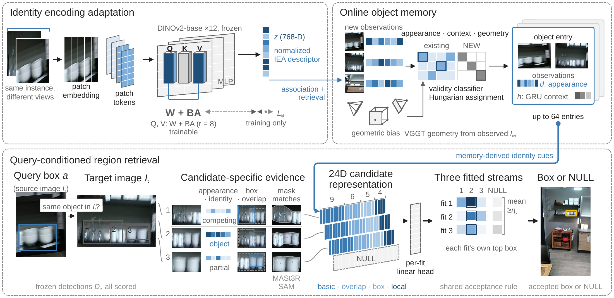
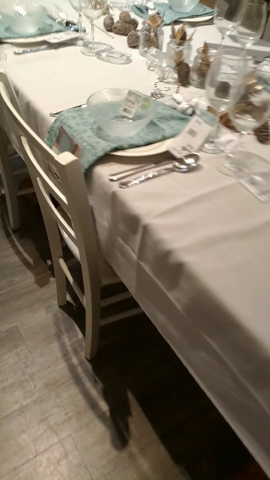
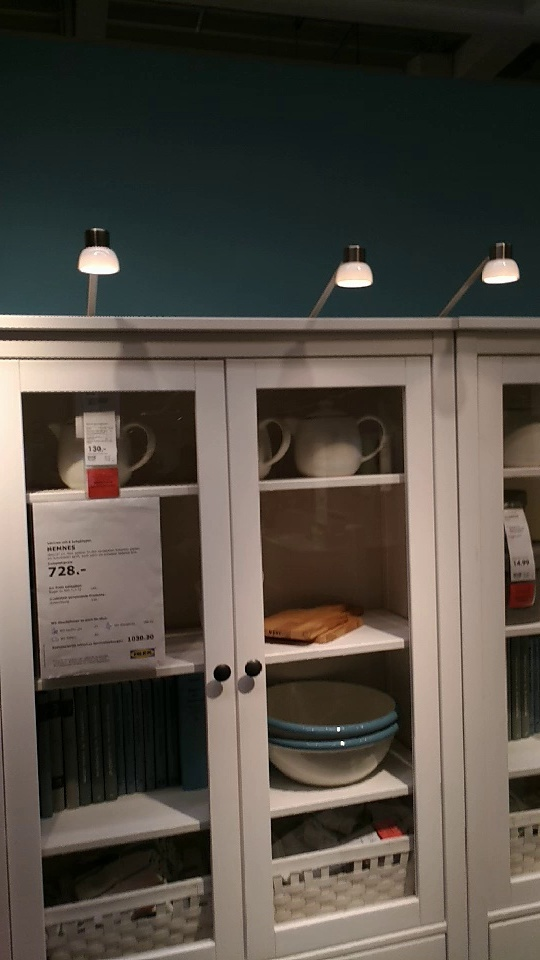
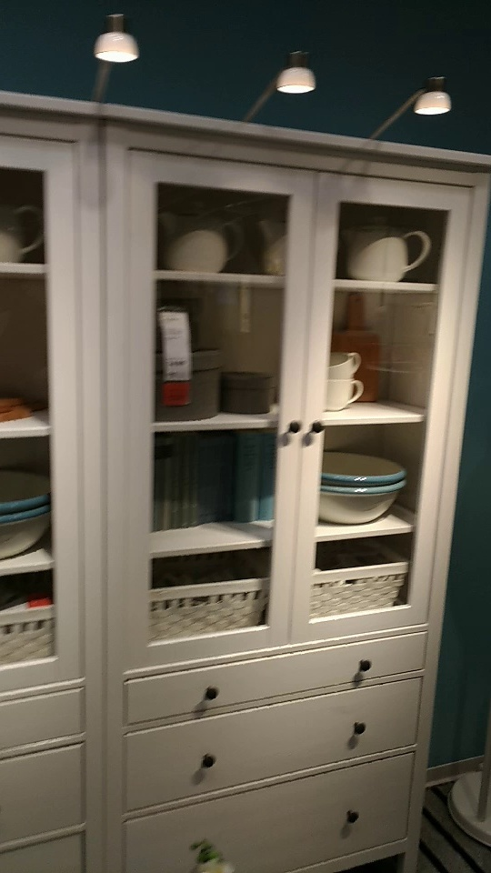
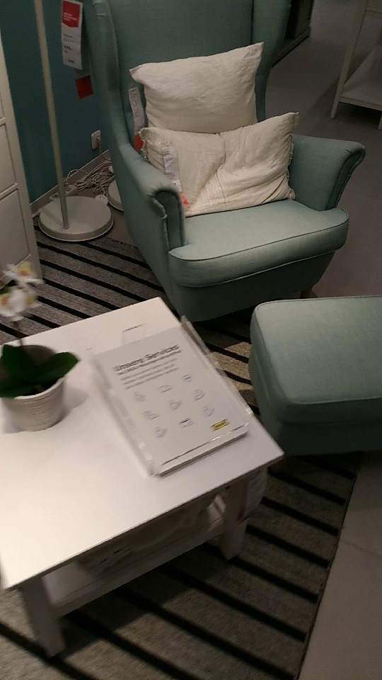
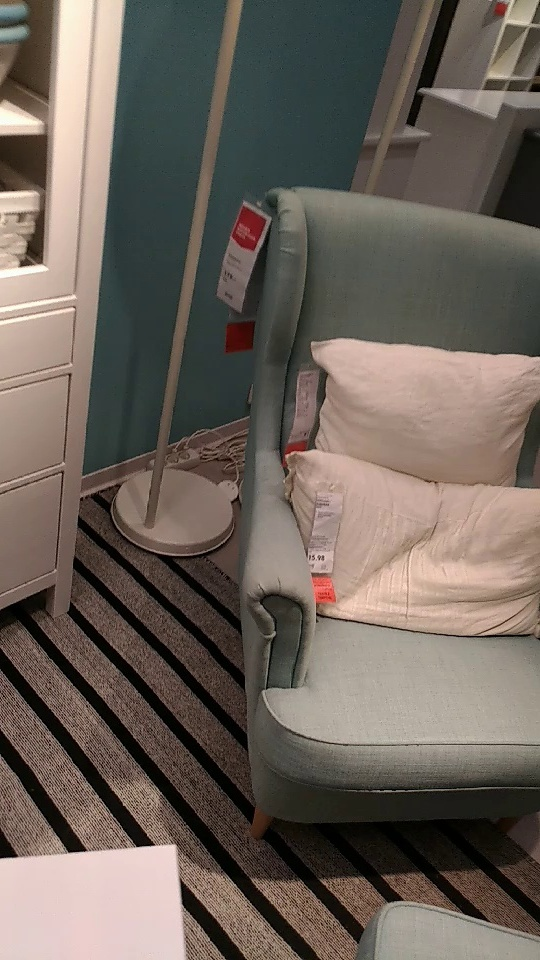

We study object retrieval from sparse RGB observations. Given an object marked by a bounding box in an earlier image, the task is to locate that object in a specified later image. Large viewpoint changes and similar-looking objects make cross-view matching difficult. Overlapping detections create an additional ambiguity when a region resembles the query but covers only part of the object.
We propose Identity-Adapted Object Memory (IAOM), which combines cross-view instance association with query-conditioned candidate ranking. An Identity Encoding Adapter learns instance-discriminative features and uses them to associate detections with entries in an online object memory. A retrieval head then scores target detections using appearance similarity, memory assignments, predicted geometry, and comparisons among overlapping boxes. Local feature correspondences within predicted object masks provide additional evidence for selecting the correct box. Three separately trained models rank the candidates, and their mean probability for each model's top candidate determines whether to return it.
On the 20-room 3RScan test set, the complete system obtains 68.07% retrieval F1. In controlled ablations with single-fit acceptance, adding local correspondence to the otherwise matched retrieval head improves F1 by 4.24 percentage points, with a room-paired 95% interval of [1.54,7.56], while increasing correct returns and reducing false positives. On MSG/ARKitScenes, the single-fit model trained and calibrated on the source data achieves 64.92% F1. These results show how local correspondence complements appearance, memory, and geometry when choosing among candidate regions.
Evaluation details
| Dataset and setting | Retrieval F1 |
|---|---|
| 3RScanFull system · 20 test rooms | 68.07% |
| MSG/ARKitScenesSingle fit · trained and calibrated on source data | 64.92% |
Effect of local correspondence+4.24 pp
Gain in retrieval F1 with single-fit acceptance. Room-paired 95% interval of +1.54 to +7.56 percentage points.Overview

The Identity Encoding Adapter learns to recognize an instance across viewpoints. Detections update an online object memory. In the requested target view, the retrieval head ranks candidate regions using their appearance, memory assignments, geometry and local feature correspondences.
Follow the display cabinet from view 1 to view 13
Comparison to REMIND





Find the display cabinet in view 13.
Query from view 1

Comparison to other retrieval methods


Find the armchair in view 16.
Query from view 3

Explore all five examples
Select an object and a baseline to view its recorded return alongside IAOM.
BibTeX
@inproceedings{qian2026iaom,
title = {{IAOM}: Identity-Adapted Object Memory for Sparse-View Object Retrieval},
author = {Qian, Rui and Zhang, Hui and Zhu, Yuanchao and He, Jun and Deng, Bicheng and Li, Haijiang and Chen, Ziao and Wu, Yuhe and Zhou, Yingbo},
booktitle = {Preprint},
year = {2026}
}